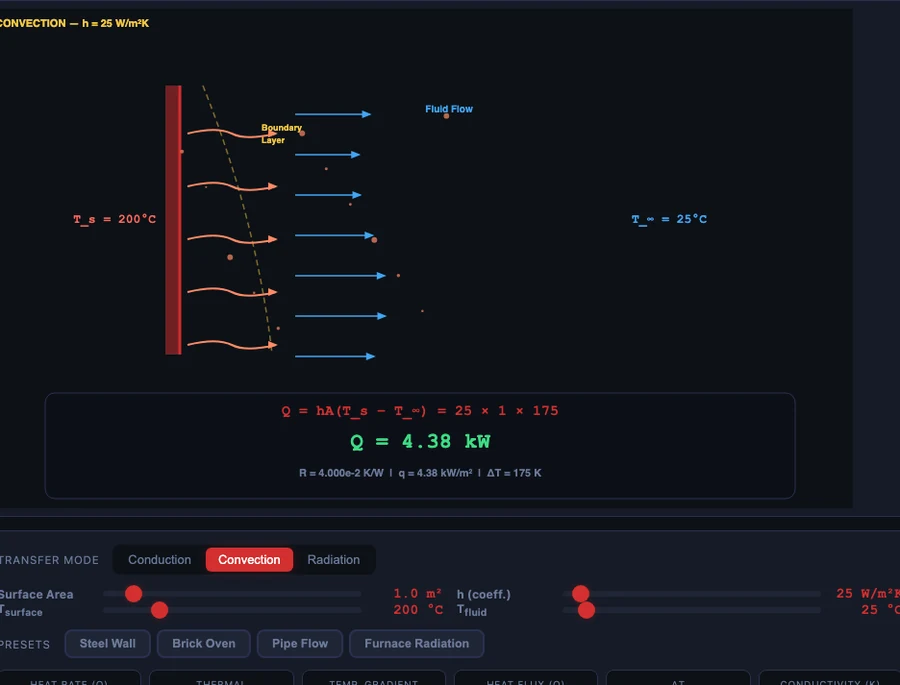

Heat Transfer — Conduction, Convection and Radiation Explained with a Simulator

- The three modes of heat transfer are conduction (through a solid by molecular vibration), convection (between a surface and a moving fluid), and radiation (electromagnetic waves needing no medium).
- Each has a governing law: conduction follows Fourier's Law Q = k×A×ΔT/L, convection follows Newton's Law of Cooling Q = h×A×(T_surface−T_fluid), and radiation follows Stefan-Boltzmann Q = ε×σ×A×T⁴ with σ = 5.67×10⁻⁸ W/m²·K⁴.
- Thermal resistance unifies all three: R = L/(k×A) for conduction and R = 1/(h×A) for convection, with series resistances adding so Q = ΔT/R_total.
Ask an engineering student to name the three modes of heat transfer and they will answer without hesitation: conduction, convection, radiation. Ask them to explain why a metal rod conducts heat faster than a brick, or why doubling the wall thickness halves the heat loss rather than halving it proportionally in a non-linear way, and the answer is less certain. The names are easy. The physics behind each mode — and especially the formulas that quantify them — are where the difficulty lives.
A free browser-based heat transfer simulator puts all three modes in one tool. Switch between Conduction, Convection, and Radiation with a single button. Adjust material, thickness, temperature, surface area, or emissivity and watch the heat transfer rate and thermal resistance update in real time. The formula is displayed on screen and the answer recalculates instantly — so students can see exactly how each variable drives the result before writing anything on paper.
Why Heat Transfer Feels Abstract in a Classroom
Conduction, convection, and radiation are invisible. You can hold a hot mug and feel the conduction through the ceramic, but you can’t see the molecular vibrations carrying energy from the inner wall to the outer surface. You can feel warm air rising from a radiator, but the boundary-layer physics that governs Newton’s Law of Cooling is not visible. Radiation from the sun is felt as warmth but carries no material at all.
This is the core teaching challenge. Unlike beam bending where you can see a deflection, or a hydraulic circuit where oil visibly flows, heat transfer happens at a scale that is difficult to point at. A simulator that animates the energy flow — particles moving through a wall gradient, fluid sweeping over a hot surface, radiation arrows leaving a glowing body — gives the invisible a visible proxy. That proxy is what turns a formula into an intuition.
Mode 1: Conduction and Fourier’s Law
Conduction is heat transfer through a solid material. The atoms don’t move — they vibrate in place and pass energy to their neighbours through molecular collisions. Metals conduct heat rapidly because their free electrons carry energy efficiently. Bricks and polymers conduct slowly because their atomic bonds transfer energy reluctantly.
The governing equation is Fourier’s Law:
Q = k × A × ΔT / L
Where Q is the heat transfer rate (watts), k is the thermal conductivity of the material (W/m·K), A is the cross-sectional area (m²), ΔT is the temperature difference across the wall (K), and L is the wall thickness (m).
The simulator hero image above shows a steel wall (k = 50 W/m·K) with Thot = 400 °C and Tcold = 50 °C across 0.10 m of thickness, 1.0 m² of area. The formula resolves live on screen:
Q = 50 × 1 × 350 / 0.10 = 175.00 kW
Switch the material from Steel (k = 50) to Copper (k = 385) and the heat rate jumps immediately — copper conducts nearly eight times more heat for the same geometry. Switch to Brick (k ≈ 0.7) and the rate drops to a fraction of the steel value. The same ΔT, the same wall dimensions, radically different heat flows. That comparison delivers more intuition about thermal conductivity than a table of values ever will.
Thermal resistance is the analogue of electrical resistance and it makes multi-layer wall problems tractable:
Rcond = L / (k × A) → Q = ΔT / R
For the steel wall: R = 0.10 / (50 × 1) = 0.0020 K/W — exactly the readout on the simulator. For composite walls, Rtotal = R1 + R2 + R3, just like resistors in series. This is the tool that makes building insulation analysis tractable by hand.
Mode 2: Convection and Newton’s Law of Cooling
Convection transfers heat between a solid surface and a moving fluid. The fluid carries warm particles away from the surface and replaces them with cooler ones — a continuous process that depends on how fast the fluid moves and how it interacts with the surface boundary layer.
Newton’s Law of Cooling:
Q = h × A × (Tsurface − Tfluid)
Where h is the convective heat transfer coefficient (W/m²·K). The value of h is where the complexity lives. Natural convection in still air: h ≈ 5–25 W/m²·K. Forced convection with a fan: h ≈ 25–250. Liquid water flowing over a surface: h ≈ 500–10,000. These ranges span three orders of magnitude and explain why water-cooled systems transfer heat so much more effectively than air-cooled ones.
The simulator’s Convection mode shows this numerically. At the default h = 25 W/m²·K with Tsurface = 200 °C and Tfluid = 25 °C over 1.0 m²:
Q = 25 × 1 × (200 − 25) = 25 × 175 = 4.38 kW
Increase h to 250 (forced convection) and Q jumps to 43.8 kW — ten times the heat transfer from the same surface under the same temperature difference. That is the engineering argument for a cooling fan.

Mode 3: Radiation and the Stefan-Boltzmann Law
Radiation requires no medium. It is heat transfer by electromagnetic waves — the same process that carries energy from the sun across 150 million kilometres of vacuum to warm the Earth’s surface. Every object above absolute zero emits radiation. The Stefan-Boltzmann Law gives the rate:
Qrad = ε × σ × A × T4
Where ε is the emissivity (0–1), σ = 5.67 × 10−8 W/m²·K4 (Stefan-Boltzmann constant), and T is the absolute temperature in kelvin. Notice the T4 dependence. Double the absolute temperature and the radiation rate increases by a factor of sixteen. This is why radiation dominates heat transfer in high-temperature applications — furnaces, gas turbines, re-entry vehicles — and is often negligible at room temperature.
Emissivity is a material surface property. Polished aluminium: ε ≈ 0.05 (reflects most radiation). Black paint or oxidised steel: ε ≈ 0.9–0.95 (emits nearly as much as a perfect blackbody). A solar-thermal collector is coated to maximise absorptivity (same physics as emissivity, by Kirchhoff’s law). An industrial furnace lining is selected for high emissivity to maximise heat delivery to the workpiece.
The Radiation mode in the simulator lets students slide emissivity from 0.05 to 1.0 and temperature from low to high, watching the T4 effect play out quantitatively. It is one of the fastest ways to internalise why T4 is in the formula rather than T or T².
Thermal Resistance — The Unifying Framework
The most useful concept in an applied heat transfer course is thermal resistance, because it makes every mode algebraically comparable and allows composite systems to be solved with simple addition.
- Conduction resistance: Rcond = L / (k × A)
- Convection resistance: Rconv = 1 / (h × A)
- Total Q through a series system: Q = ΔTtotal / Rtotal
Consider a brick wall with convection on both sides. Five resistances in series: Rconv,hot + Rbrick + Rconv,cold. Add them, divide the overall temperature difference, and you have the steady-state heat flux through the entire assembly. This is the calculation behind every building energy rating, every heat exchanger design, and every thermal management system in electronics.
The simulator calculates and displays R for whatever mode is active. Students can verify that Rcond = 0.0020 K/W for the 0.10 m steel wall, check it equals L/(k×A) = 0.10/(50×1), and then understand why switching to Brick (k = 0.7) makes R jump to 0.143 K/W — 70 times higher, 70 times less heat transferred.
How to Use the Simulator in Class
Start with a material comparison on Conduction mode. Set identical geometry: L = 0.10 m, A = 1.0 m², Thot = 400 °C, Tcold = 50 °C. Cycle through Steel, Copper, Brick, and Glass. Ask the class to predict the ordering before clicking. Steel conducts well (k = 50); Copper much better (k = 385); Brick very poorly (k ≈ 0.7). When they see the numbers confirm their prediction, the material-property table starts making sense.
Demonstrate the thickness effect. Hold everything fixed on Steel and slide the Wall Thickness from 0.10 m to 0.20 m. Q halves. To 0.05 m: Q doubles. Students who see this direct linear relationship between thickness and resistance — R = L/kA — rarely forget it.
Show why convection coefficient matters more than surface temperature. On Convection mode, set Tsurface = 300 °C, Tfluid = 25 °C, h = 25. Note Q. Now reduce Tsurface to 200 °C but increase h to 250 (simulating a fan). Q increases despite a lower surface temperature, because h dominates. This is the design insight behind forced-air cooling in electronics.
Use the presets for scenario-based learning. The four presets (Steel Wall, Brick Oven, Pipe Flow, Furnace Radiation) represent real engineering scenarios. Load “Brick Oven” and discuss the thermal resistance of a kiln wall. Load “Furnace Radiation” and discuss why radiation becomes the dominant mode at furnace temperatures. Each preset is a conversation starter that connects the formula to an application students have seen.
For the engine thermodynamics context where combustion heat is converted to mechanical work, see our article on the four-stroke engine cycle and PV diagram — heat transfer is the input to every thermodynamic cycle.
Try It Yourself
All tools below are free — no account, no download. Open them in a browser and start experimenting.
Key Takeaways
- Three modes: conduction (through solids via molecular vibration), convection (between a surface and a fluid), radiation (electromagnetic waves, no medium needed).
- Fourier’s Law: Q = k×A×ΔT / L. Steel (k=50) conducts over 70 times more heat than brick (k=0.7) for the same geometry and temperature difference.
- Newton’s Law of Cooling: Q = h×A×(Ts−Tf). Forced convection (h≈250) transfers ten times more heat than natural convection (h≈25) from the same surface.
- Stefan-Boltzmann radiation: Q = ε×σ×A×T4. The T4 dependence makes radiation dominant at high temperatures and negligible at room temperature.
- Thermal resistance unifies all three modes: Rcond = L/(kA), Rconv = 1/(hA). Series resistances add; Q = ΔT/Rtotal.
- The NHIT VisualLab Heat Transfer tool covers all three modes with live formula display, animated flow, four material presets, four scenario presets, and four learning modes — free, in a browser.
Frequently Asked Questions
What are the three modes of heat transfer?
Conduction (through a solid by molecular vibration), convection (between a surface and a moving fluid), and radiation (electromagnetic waves requiring no medium). Real systems involve all three simultaneously.
What is Fourier’s Law?
Q = k×A×ΔT / L. For steel (k=50 W/m·K), A=1 m², L=0.10 m, ΔT=350 K: Q = 175 kW — confirmed exactly by the simulator readout. Thermal resistance R = L/(kA) = 0.0020 K/W.
What is Newton’s Law of Cooling?
Q = h×A×(Tsurface−Tfluid). At h=25 W/m²·K (natural air convection), Ts=200 °C, Tf=25 °C, A=1 m²: Q = 4.38 kW. Increase h to 250 (forced convection) and Q becomes 43.8 kW — ten times more from the same surface.
What is thermal resistance?
Thermal resistance R is the temperature difference per unit of heat flow: Q = ΔT/R. For conduction R = L/(kA); for convection R = 1/(hA). Series resistances add like electrical resistors, making composite wall analysis straightforward.
How does emissivity affect radiation?
Emissivity ε (0–1) scales the Stefan-Boltzmann radiation: Q = εσAT4. Polished aluminium (ε≈0.05) emits very little; black paint (ε≈0.95) emits nearly as much as a perfect blackbody. The T4 dependence means small temperature increases cause large radiation increases at high temperatures.
Heat transfer sits at the core of almost every engineering system — from the wall of a building to the cooling fins on a processor, from the working fluid in a heat exchanger to the re-entry shield on a spacecraft. Getting the three modes clear in your mind, and understanding when each dominates, is one of the most transferable skills a thermal engineering student can develop.
The simulator makes the comparison immediate. Switch between Conduction, Convection and Radiation. Change one variable. Watch the heat rate respond. If you want to understand why the numbers move the way they do, the heat transfer simulator is free and ready when you are.